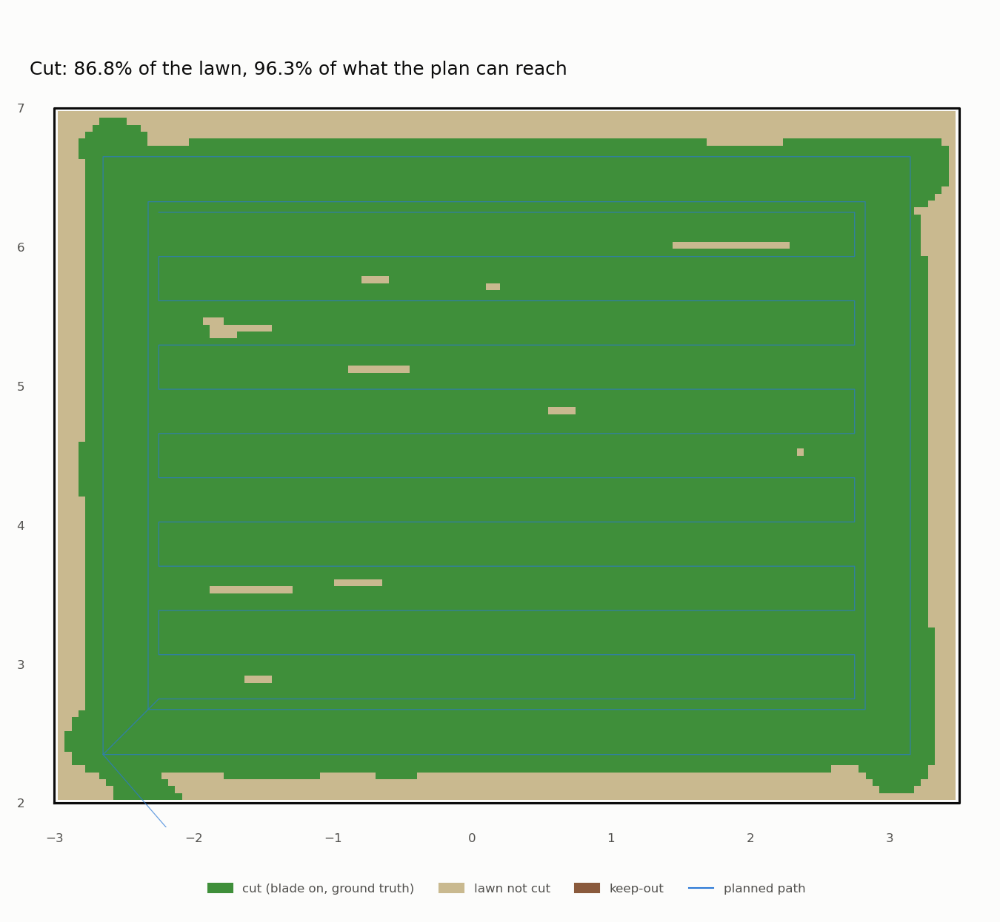

Grass is not an obstacle (it took nine stops to get there)
Until tonight the sim lawn was a flat green plane. Real grass is 5 to 10 cm tall, and our 3D-lidar safety gate stopped for anything 3 cm above the ground. So we grew grass the lidar can see, and the robot never left the dock. Seventeen runs later it mows a whole zone in 7 cm grass, over bumps and a 25 cm mound, with zero false stops. Every fix in between came from a stop the robot explained itself.
Growing grass a lidar can see
Gazebo's gpu_lidar renders the scene, so it sees visual geometry. A green texture is invisible to it. Grass
has to be geometry: 58,000 tufts, each a thin four-sided pyramid, on a jittered 7 cm grid with heights of nominal
±25%. They're all one OBJ mesh with no collision (the robot drives through grass), so the GPU draws one thing,
not 58,000 models. It takes 0.2 s to generate and is 12 MB. make mow-run GRASS=0.07.
For uneven ground, TERRAIN=bumpy adds a collision mesh: twelve 3–6 cm bumps and one broad 25 cm mound, with
slopes up to 12°. Heights are never below zero, so the old plane still holds up the rest of the yard, and the
dock stays level. (First try: Gazebo segfaulted. DART needs a normal per vertex in a collision mesh. Without
them it drops the mesh and the server crashes. We now compute them from the terrain's gradient.)
The baseline: stuck at the dock
| Run | What | Result |
|---|---|---|
grass-3d-1 |
7 cm grass, the gate as it was | STOP at 0.35 m before leaving the dock, latched forever. 0 m² mowed |
That's the honest starting point. "Obstacle = anything 3 cm above z = 0" makes every blade an obstacle.
The stops, one at a time
The 3D point cloud is too heavy to record, so after the first failure the gate started keeping evidence:
every STOP event now carries the nearest offending points (position and height above the ground) and the fitted
ground plane. scripts/stop_probe.py <run> turns that into world coordinates. Each row below is one stop it
explained:
| Run | The stop | What it really was | Fix |
|---|---|---|---|
grass-3d-2/3 |
0.56 m ahead while turning | The flowerbed (15 cm), real, but 1 m away during a pivot | Protect what the motion sweeps: a pivot checks a circle (0.575 m + 0.10 m), not a corridor |
grass-3d-4 |
0.21 m from the axle | The robot itself: the lidar sees its own deck | Ignore points inside the footprint |
grass-3d-6 |
one point, 10.1 cm, behind | A tall tuft against a plane fitted ahead and extrapolated behind | An object needs 3 returns within 10 cm; clearance = tallest grass + 3 cm = 12 cm |
grass-3d-7 |
flowerbed edge, twice | Real: 13–15 cm, exactly the bed's height | None in software (a decision for Chris, below) |
grass-bumpy-2 |
grass behind, 12–14 cm | The forward plane was 4 cm low behind the robot | A second plane fitted around the robot for pivots |
grass-bumpy-3 |
grass on a bump, 12–14 cm | A plane can't follow a 6 cm bump 0.5 m wide | Local ground: per-cell lowest return, capped at 4 cm above its neighbours |
The cap in the last row is the important design choice. Taking each cell's lowest return as "ground" follows bumps, but a box that fills a cell completely shows only its top, and its top would become the ground. Capping a cell at its neighbours' ground + 4 cm means an object loses at most 4 cm of apparent height. A 20 cm box still reads ≥ 16 cm (a unit test checks it), and the face nearest the robot always has real ground beside it.
Two passes
| Run | Ground | Mowed | False stops | Coverage | Cross-track max |
|---|---|---|---|---|---|
grass-open-1 |
flat, 7 cm grass | 37.1 m² | 0 | 98.3% | 9.7 cm |
grass-bumpy-4 |
bumps + 25 cm mound, 7 cm grass | 37.0 m² | 0 | 96.3% | 11.1 cm |

And the 2D lidar on the same bumpy lawn (grass-bumpy-2d-1)? We expected the mound to look like a wall to a
horizontal beam 15 cm up. It didn't stop the robot, but it slowed it for 124 s of a 397 s mission (the 3D gate:
5 s of 342 s). The beam meets the rising slope 1 to 1.5 m ahead, inside the slow field but outside the stop field,
and once the robot is on the slope it tilts with it and the beam clears. A steeper or shorter rise would stop it.
The 2D lidar was never going to see a hedgehog anyway; this is one more reason the 3D lidar is the safety sensor.
Both ran in a new lawn zone, the Open patch, between the house and the tree, with nothing raised in it. The test patch has the flowerbed, and that turned out to be its own problem.
Still stopping for every real thing?
Ignoring grass is only worth something if the gate still stops for everything else. So we ran the obstacle course twice with the new gate, 3D lidar. First as a regression on the flat lawn (default clearance 3 cm), then in 7 cm grass with the 12 cm clearance:
| Obstacle | Height | Flat, new gate | 7 cm grass, clearance 12 cm |
|---|---|---|---|
| pole | 1 m | PASS, seen at 1.47 m, 0.57 m to spare | PASS, seen at 1.46 m, 0.57 m to spare |
| box | 20 cm | PASS, 1.49 m, 0.58 m | PASS, 1.47 m, 0.57 m |
| child (lying) | 25 cm | PASS, 1.48 m, 0.57 m | PASS, 1.49 m, 0.57 m |
| ball | 20 cm | PASS, 1.48 m, 0.57 m | PASS, 1.43 m, 0.56 m |
| hedgehog | 10 cm | PASS, 1.48 m, 0.57 m | HIT, never seen |
| hose | 4 cm | PASS, 1.27 m, 0.56 m | HIT, never seen |
| nothing | no false stops | no false stops |
The two hits are the result Phase 5's plan predicted, and they're why the plan has more steps. Height is the only thing the lidar measures. If the grass is 9 cm tall and a hedgehog is 10 cm tall, no threshold separates them: a clearance low enough to see the hedgehog stops for the grass. The hose lies under the grass. Two things follow. D2, the long-grass rule: keep the lawn short enough (≤ ~8 cm) that the clearance stays low. And the camera (5.3), which can tell an animal from a tuft by what it looks like, not how tall it is.
So how short is short enough? With our clearance rule (tallest grass, nominal × 1.25, plus 3 cm), a 10 cm hedgehog stays above the clearance only while the grass is under about 5.6 cm. We tested the edge: 5 cm grass, clearance 9.25 cm.
| Run | Result |
|---|---|
course-grass5-hedgehog-3d |
PASS: hedgehog seen at 1.22 m, stopped with 0.56 m to spare |
course-grass5-none-3d |
no false stops |
grass5-bumpy-1 (full mow, bumpy) |
37.1 m², 0 false stops, coverage 96.6% |
That gives D2 its number. We had pencilled in "about 8 cm", which is too tall. For the lidar alone to protect a hedgehog, the long-grass rule has to trip at about 5.5 cm of uncut grass. Our sim lawn's cut height is 6 cm, so even a fresh cut sits at the edge. That's a decision for Chris (cut lower, or accept that the camera does this job in grass over 5.5 cm).
(The flat child run needed a rerun: Gazebo started but never published /clock, a flaky start we've seen once
before, unrelated to the gate.)
A decision for Chris: raised flowerbeds
The 3D lidar sees a 15 cm raised bed as what it is, an obstacle. The 2D lidar never did, because it sits at 15 cm. The planner ends stripes with the nose 0.26 m from a keep-out. But since course-b the gate keeps a floor under its stop field (the blind range of the downward beams, so a hedgehog can't vanish under them), which stops the robot about 0.6 m from anything taller than the clearance. Head-on to a raised bed, those two can't both be satisfied.
- A. The planner keeps ~0.7 m from raised keep-outs. Safe, and leaves a strip for the trimmer.
- B. The gate ignores returns inside a mapped keep-out. Full coverage, but less caution (a child in the bed).
- C. A by default, B as an app-only owner switch.
Claude's recommendation is A now. Nothing is built until Chris decides.
What we learned
- Make the robot explain its stops. Every fix tonight came from evidence the gate logged itself. Without it we would have tuned the clearance up until the stops went away, and hidden the flowerbed problem.
- Protect the space the motion sweeps. A stop field is about where the robot is going: a corridor when driving, a circle when turning. The old gate checked a corridor during pivots.
- Fit the ground where you're about to measure. A plane fitted ahead was wrong behind; a plane was wrong on a bump. Each is fine for its own job.
- One return is not an object. Real things return many points; noise and grass tips return one.
Next: 5.1a, the long-grass rule. The mowed stripe beside the robot is a free measurement of cut height, and the uncut grass ahead tells us how tall the lawn is. The clearance should come from that measurement, not from a number we typed.